我是黃大恩，目前就讀國立勤益科技大學人工智慧應用工程系，系排名 12／79（前 15.19%）。我對程式設計的興趣始於高中 Python 課程；透過持續練習與參與競賽，我逐步建立資料結構與演算法基礎，並於 全國高級中等學校技藝競賽程式設計職種獲全國第 18 名 ，透過技優入學進入國立勤益科技大學。高中接觸基礎 AI 影像辨識應用後，我開始對讓程式理解資料、解決真實問題產生濃厚興趣。
對我而言，收穫最多的一段經驗是大一升大二暑假參加的 2024 年全國智慧製造大數據分析競賽 。這是我第一次真正面對產業資料，嘗試從資料分布與趨勢分析出發，建立溫度曲線預測與瑕疵分類模型。從線性擬合、Weibull 與 log-logistic 曲線，到後續的深度學習模型，我在不斷調整方法、檢視誤差的過程中，理解到完成 AI 任務不只是選擇模型，更需要理解資料、設計合適的實驗流程，並在有限資源下做出合理取捨。
大學期間，我以「智慧登山杖：結合 IMU 與 AI 疲勞監測的登山安全輔助系統」為核心專題，結合感測器資料、手機 App、深度學習模型與無線電求救機制，嘗試建立能實際應用於山域安全的智慧系統。我主要 負責原始資料蒐集、資料清理與增強、模型訓練、實驗設計及跨使用者驗證 。由於相關公開資料有限，專題資料皆由團隊與受試者實地蒐集；在反覆登山、測試與修正的過程中，我更加理解資料品質、泛化能力與部署可行性對 AI 系統的重要性。
這段研究經驗促使我完成四篇已接受論文，其中 IS3C 2025、iFuzzy 2025 與 ILT「智能姿態監測」為第一作者，ILT「無線電搜救」為第三作者。未來，我希望持續深耕人工智慧、時序訊號分析、電腦視覺與 Edge AI，並在研究所階段建立更扎實的資訊工程基礎，將資料分析、演算法與系統整合能力，轉化為能在真實環境中穩定運作的智慧應用。
— 2027.06
國立勤益科技大學｜人工智慧應用工程系
四技日間部｜學士班在學（預計 2027 年 6 月畢業）
截至大三：系排 12 / 79（前 15.19%）｜歷年總平均 83.67
研究重點：時序訊號分析、機器學習、電腦視覺。
— 2023.06
新民高級中學｜資料處理科
高職部｜三年制
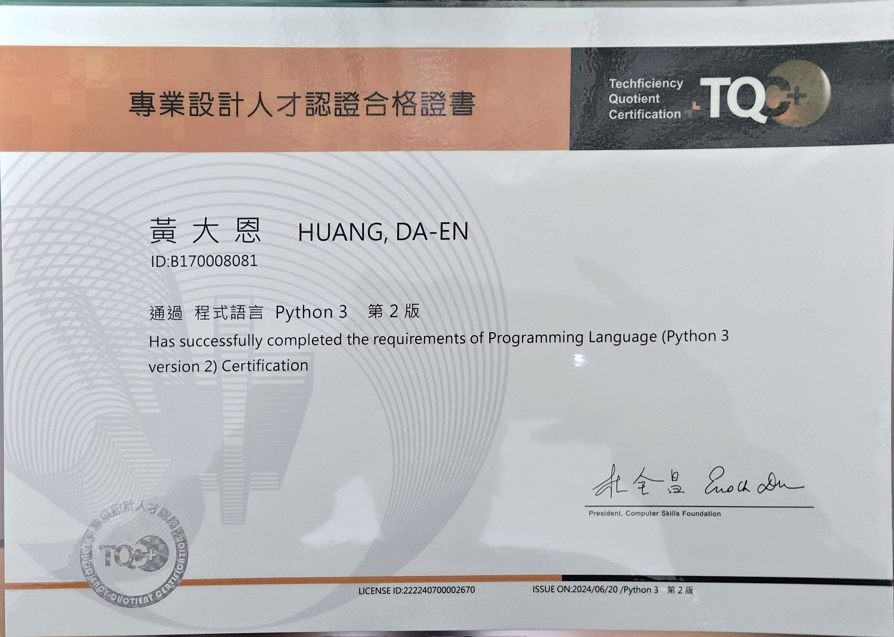
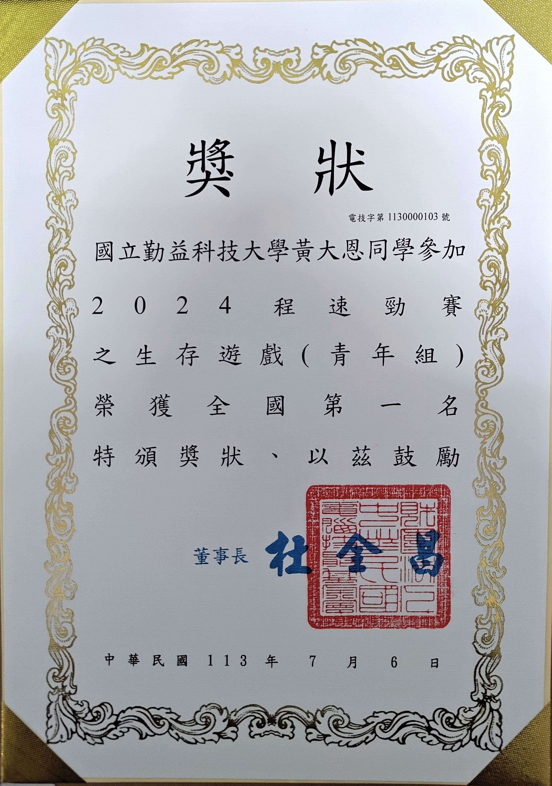
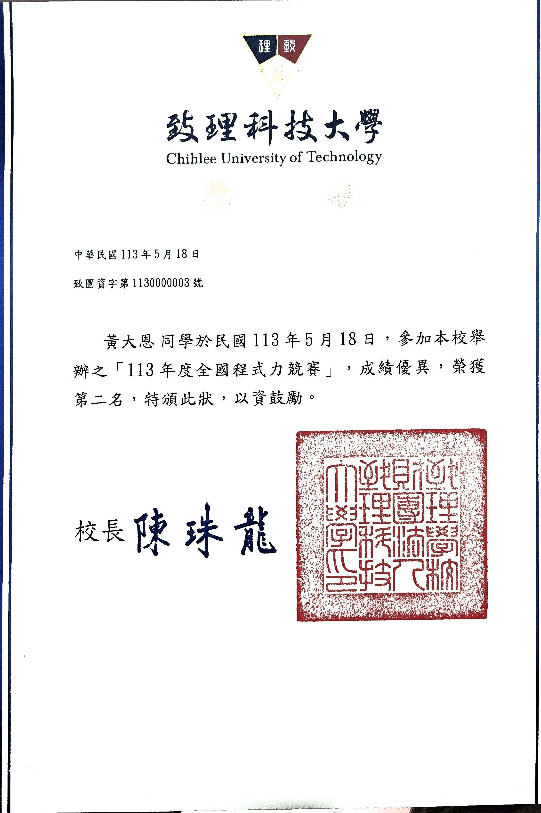
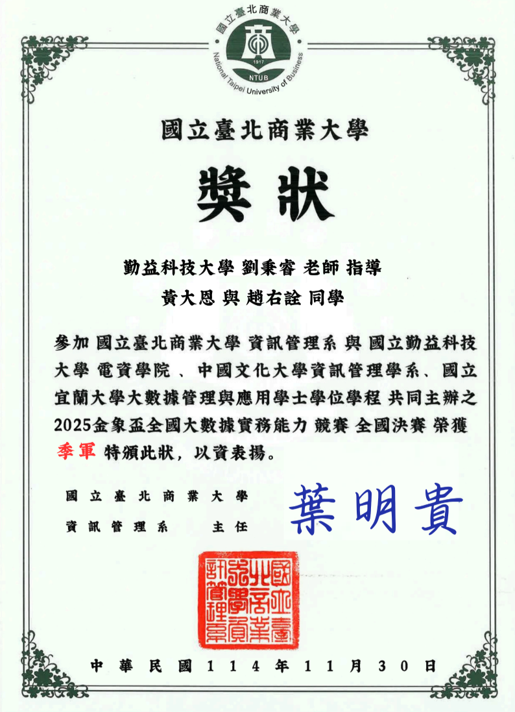
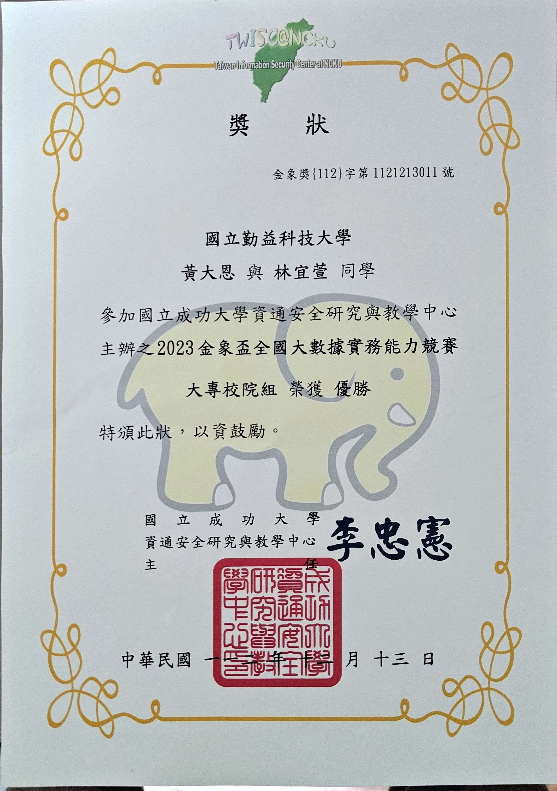
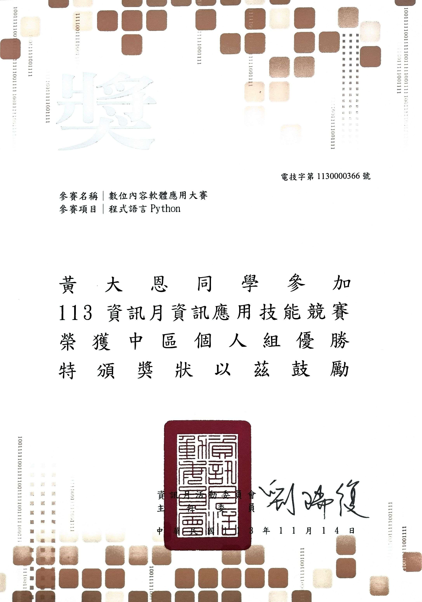
智慧登山杖：結合 IMU 與 AI 疲勞監測的登山安全輔助系統
本專題實作完整的邊緣端機器學習與應急無線電偵測流程。原始訓練資料由 2 名專題作者實地蒐集，建構逾 20 小時之真實高山步態時序資料庫；前處理階段導入去噪擴散機率模型（DDPM）執行高階數據增強，改善樣本不平衡；藉由三軸加速度與三軸陀螺儀訊號進行時序特徵擷取。模型訓練階段採用輕量化門控循環單元（GRU）捕捉步態演變特徵，並於邊緣端推理架構整合 CORAL 演算法，實作無監督領域自適應校準，以降低跨使用者與地形差異造成的領域偏移。
Smart Hiking Stick with IMU & AI Fatigue Monitoring
主要研究分工：IMU 步態資料蒐集、疲勞辨識資料處理、模型訓練與實驗分析。
DOI: 10.1109/IS3C65361.2025.11131049搭載 IMU 的智慧登山杖與 AI 疲勞監測系統
主要研究分工：時序資料前處理、資料增強、疲勞辨識模型與消融實驗。
搭載 IMU 的智慧登山杖與 AI 疲勞監測系統
主要研究分工：IMU 姿態與步態資料分析、疲勞模型設計及跨使用者驗證。
應用於山域搜救之軟體定義無線電頻率自動偵測與主動求救系統
研究分工：參與無線電辨識模型之整體架構設計。
本研究為檢驗步態疲勞演算法與無線電傳導模型之泛化能力，由 2 名專題作者實地進行原始步態資料蒐集，另邀請 6 名測試者進行跨主體測試。由於其中 4 名測試者於測試期間未呈現明確疲勞狀態，具備疲勞類別辨識參考價值的跨主體資料主要來自其餘 2 名。外測場域涵蓋坡地、石階、高海拔與濃霧等不同環境：
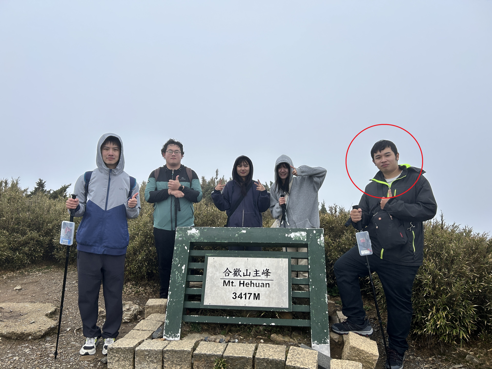
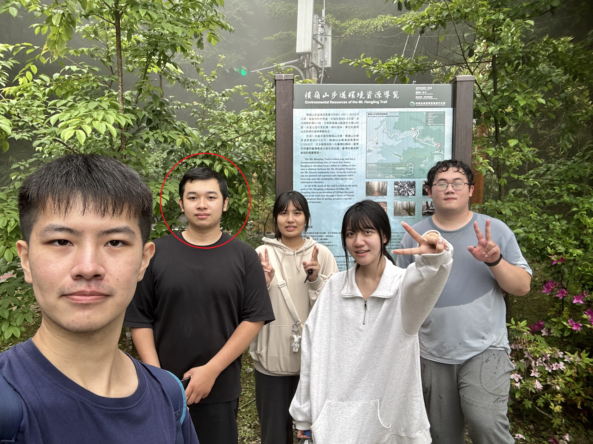
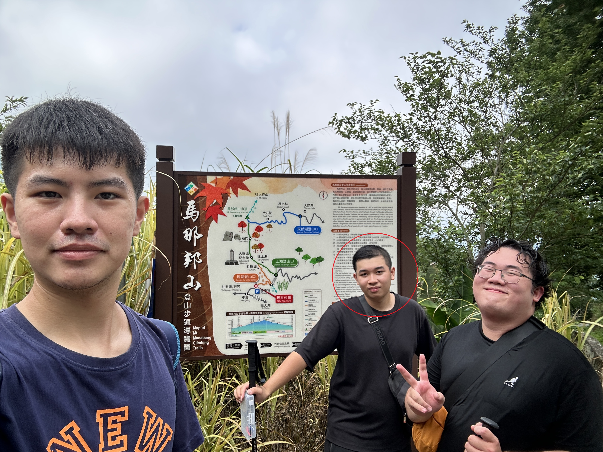
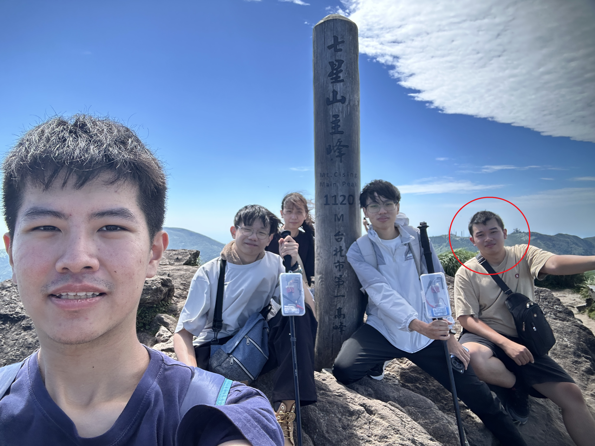
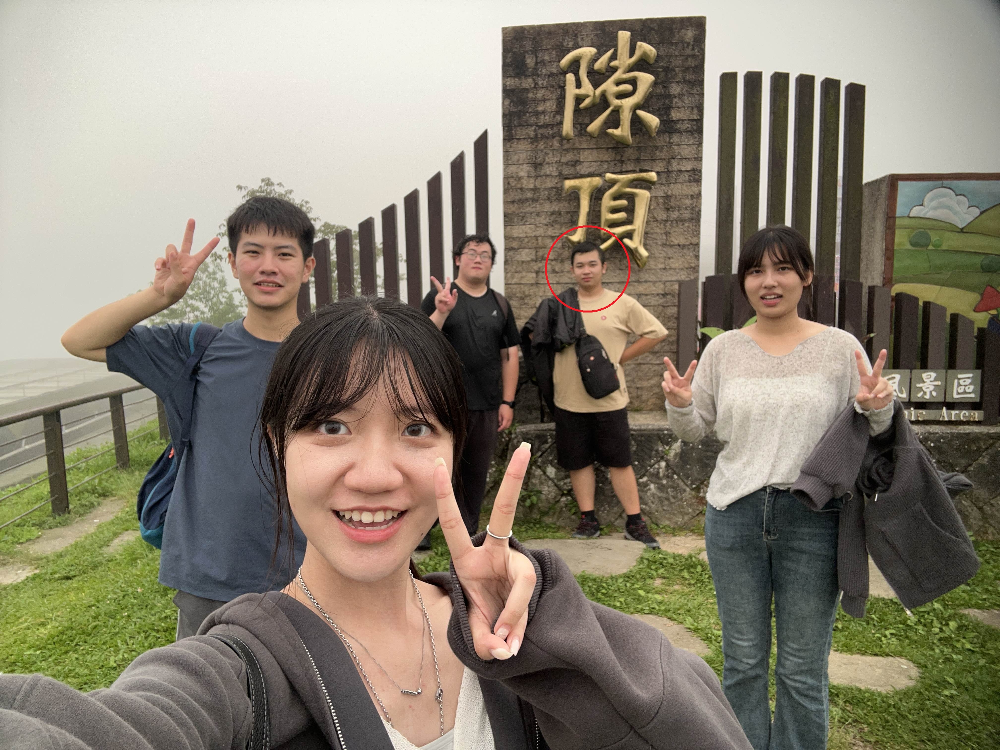